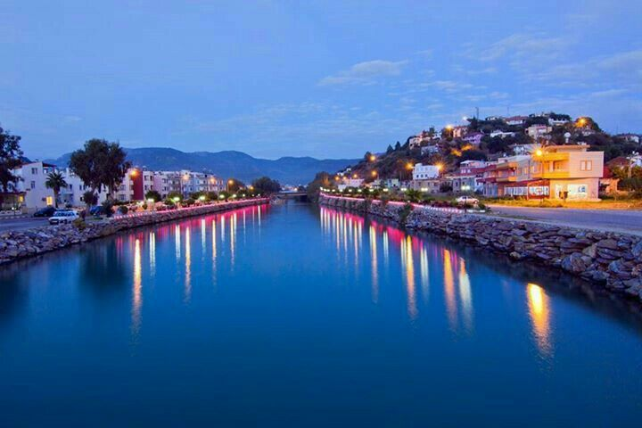

Bozyazı İlçesi

Bozyazı, Mersin'in batısında yer alan, doğal güzellikleri ve tarihi dokusuyla dikkat çeken bir ilçedir. Sahil kıyısındaki plajlarıyla popülerdir.
Gezilecek Yerler
- Softa Kalesi: Tarihi kalıntılarıyla dikkat çeken bu kale, ilçenin önemli turistik noktalarındandır.
- Bozyazı Plajı: Temiz sahili ve huzurlu atmosferiyle ziyaretçileri kendine çeker.
- Limonlu Deresi: Doğal güzellikleri ve serin sularıyla piknik alanı olarak tercih edilmektedir.
Yöresel Lezzetler
Bozyazı'da taze balık çeşitleri ve zeytinyağlı yemekler öne çıkar. Ayrıca narenciye ürünleri de oldukça meşhurdur.
Ana Sayfaya Dön